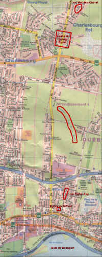
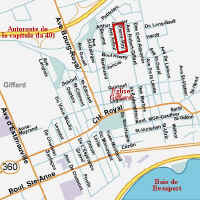
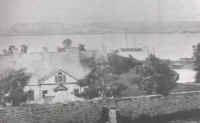

|

MATHIEU CHORET, SEIGNEURIE
NOTRE-DAME-DES-ANGES
|
La
terre de Mathieu touche au fleuve, dans la baie de Beauport, sur
environ 575 pieds de large (3 arpents). Sa profondeur est
d'environ 12 milles (4 lieues) vers le nord, incluant les
premiers contreforts des Laurentides.
C'est une immense de 1 000 arpents.

|
| QU'EST-CE QUE LA SEIGNEURIE
NOTRE-DAME-DES-ANGES ?
Henri de Lévy, duc de Ventadour, vice-roi de Nouvelle-France,
concède aux pères Jésuites la Seigneurie Notre-Dame-des-Anges
le 10 mars 1626. D'ouest en est, la seigneurie s'étend du
ruisseau Saint-Michel, en amont de la rivière Lairet, à la rivière
Beauport. La rivière Saint-Charles la sépare d'une autre seigneurie du même nom
concédée aux Récollets, sur la rive opposée (là
où se trouve encore l'Hôpital Général).
La
seigneurie des Jésuites couvre une lieue de front sur quatre
lieues de profondeur. Ils établissent leur ferme
Notre-Dame-de-Bonsecours entre la rivière Beauport et celle de
la cabane aux Taupinières (le ruisseau du
Moulin), soit
l'espace correspondant aujourd'hui à Giffard.
En 1629, la prise de la colonie par les frères Kirke freine
la première phase de colonisation. Obligés de rentrer en
France, les Jésuites reviennent au pays après la signature du traité
de Saint-Germain-en-Laye, trois ans plus tard. Ils
s'occupent d'abord de reconstruire leur résidence (sur le site
actuel du parc Cartier-Brébeuf), puis de distribuer des terres
aux colons désireux de les défricher. Ces premières
terres sont découpées en bandes longitudinales le long du
fleuve (à la Canardière) et de la plaine de la rivière
Saint-Charles.
 Lorsque Mathieu Choret revient en Nouvelle-France en 1647,
avec son épouse Sébastienne Veillon, les terres près de
Québec sont toutes occupées, les Jésuites lui concèdent donc
une terre à l'extrémité est de leur Seigneurie, près de leur
ferme. Le contrat
sera passé en mars 1649 et on peut y lire: "trois arpents
de terre de front sur le Grand Fleuve de Saint Laurent de la
Nouvelle France et de quatre lieues de profondeur dans le bois,
..." Le ruisseau du Moulin fait un droit sur une
partie de la terre de Mathieu. Ce ruisseau, de 8,8 kms prend sa
source à la Montagne des Roches et va se jeter dans la baie de
Beauport. Lorsque Mathieu Choret revient en Nouvelle-France en 1647,
avec son épouse Sébastienne Veillon, les terres près de
Québec sont toutes occupées, les Jésuites lui concèdent donc
une terre à l'extrémité est de leur Seigneurie, près de leur
ferme. Le contrat
sera passé en mars 1649 et on peut y lire: "trois arpents
de terre de front sur le Grand Fleuve de Saint Laurent de la
Nouvelle France et de quatre lieues de profondeur dans le bois,
..." Le ruisseau du Moulin fait un droit sur une
partie de la terre de Mathieu. Ce ruisseau, de 8,8 kms prend sa
source à la Montagne des Roches et va se jeter dans la baie de
Beauport.
Mathieu et Sébastienne vivent à la
dure et font des efforts
remarquables pour défricher et semer leur terre. Les
enfants y naissent, et, leur mode de survie, saison après
saison, leur permet de gagner leur pari. Sans avenir en France,
le couple bâtit ici un monde meilleur pour eux et leur
descendance.
|

Carte de 1709 de Gédéon de Catalogne
|

Carte de Bellini de 1744
montrant
bien la Baie de Beauport
|
La terre de Mathieu mesure 1000 arpents de superficie.
Cette immense terre qu'il possède est cause de litige
entre lui et les héritiers de Guillaume Couillard. À
la requête du Sieur Robert Giffard, pour éviter un
différend, Jean Guion Dubuisson est chargé d'arpenter
la terre le mercredi 12 avril 1662. Comme elle empiète
sur celle des Couillard on doit procéder à un réalignement
qui a lieu le vendredi 22 février 1664. Pour redonner
à chacun son dû, les Jésuites acceptent d'orienter
les deux derniers lieux de leur concession de façon
différente.
Entretemps, le 17 août
1663, Charles de Lauzon concède à Mathieu
Choret une terre dans sa seigneurie de l'île d'Orléans.
Mathieu ne peut en profiter longtemps car il décède le 27 mars
1664. Au recensement de 1667, on trouve son fils aîné Robert
à
l'île d'Orléans
sur une terre de deux arpents, sans doute celle de son père.
Mathieu, sans avenir en France, est devenu. dans son nouveau pays, propriétaire de
terres qu'il a
léguées à ses héritiers, lesquels ont continué son
travail.
|
|

|

|
|
Détail du plan de la Seigneurie
Notre-Dame-des-Anges dressé par Ignace Plamondon en mars 1754.
On y voit que le morcellement des terres est parfois différent,
par rapport à la carte de 1709 de Catalogne. Entre
autres, la partie de la terre qui appartenait à Mathieu au sud
du Bourg-Royal est découpée. J'ai tenté de tirer les
lignes de la terre de Mathieu, telle que vue en 1709. |

|
|
MAIS OÙ SE SITUE EXACTEMENT
LA TERRE DE
MATHIEU?
Voilà la question
intéressante. Plusieurs associations de famille-souche ont
élevé une plaque commémorative ou un monument sur la terre de
leur ancêtre. Il n'y a rien de tel encore pour la famille
Charette. Donc, nous devons extrapoler en amateurs.
Dans les documents, on mentionne que la terre de
Mathieu se situait à peu près là où
on retrouve aujourd'hui l'église de Giffard. Cette paroisse
date de 1914, suite à son détachement de celle de Beauport.
|
|
Voici deux photos de l'église de Giffard trouvées sur
le web.
|

|
TENTONS MAINTENANT DE
SITUER LA TERRE DE MATHIEU
|

Carte de 2005
|
|
Essayez, à l'œil, de faire concorder le
tracé de la terre de Mathieu, tel que vu sur la carte de 1709,
avec cette carte récente, en partant de la baie de Beauport, en
englobant l'église de
Giffard, et en faisant un tracé un peu en diagonale pour arriver
à l'ouest du centre du Bourg-Royal, et en tenant compte
aussi du ruisseau que l'on retrouve sur les deux cartes...
N.B. en haut, à droite, vous trouvez la rue Ampère qui
devrait devenir la rue Mathieu-Choret en 2006,
si la Ville de Québec vote son projet de changement de
nom pour les doublons de noms de rues, suite aux fusions
municipales. |
Évidemment, tout cela n'est qu'approximatif,
et loin du travail d'un arpenteur. Mais cela nous
permet quand même d'avoir une très bonne
idée de l'endroit où se situait la terre de Mathieu.
Une
belle surprise, plusieurs d'entre nous, surtout Lucie, avons
passé quelques moments sur, ou très près, de la terre de
Mathieu. En effet, la maison de Lucie sur la rue Pierre-Roy
(celle avec la piscine intérieure) jouxtait de très près,
à l'est, la terre de Mathieu. Qui sait, elle était
peut-être même sur la terre de Mathieu. Il faudrait des recherches plus
précises pour le savoir.
|

|

|
|
La rue
Pierre-Roy, Beauport |
Lucie et
tante Thérèse, rue Pierre-Roy |
Conclusions
On peut situer en gros
l'emplacement de la terre de Mathieu et conclure:
| Que chaque fois que vous passez sur
l'Autoroute de la Capitale, pour aller, par exemple, skier au Mont
Sainte-Anne, vous traversez, en diagonale sur 575 pieds, la terre de
Mathieu à la hauteur de la sortie Bourg-Royal. |
Que la partie ouest du centre d'achats Carrefour Beauport, tout
juste au nord de la 40, est bâtie sur la terre de Mathieu. |
Que l'avenue du Bourg-Royal chevauche, par
endroits, la terre de Mathieu. Et qu'une partie de la
terre semble encore un espace vert, selon la carte de
2005. Il faudrait aller voir de plus près ce qu'il en est
au juste. |
| Que le ruisseau qui traverse la
terre de Mathieu s'appelle le ruisseau du Moulin. Sans doute doit-il son nom au fait qu'il alimentait le
Moulin des Jésuites,construit
vers 1740, ce qui en fait le
plus vieux bâtiment du Trait-Carré. Il est
peut-être construit, en partie du moins, sur
l'ancienne terre de Mathieu. |

Moulin des Jésuites,
Charlesbourg
|
|
|
|
Avant
de terminer, un petit mot sur Beauport
Mathieu vit bien plus près de Beauport que de Québec.
Ses
liens avec ses voisins beauportois sont sûrement nombreux,
il lui est plus facile d'aller à Beauport qu'à Québec
pour ses affaires.
 Les
relations des Jésuites (Vol.
36, p.114) rapportent
que le 12 mars 1651 "la maison de Mathieu Choret
brûla lorsque lui et sa femme étaient à la messe à
Beauport". Une
autre preuve des liens de Mathieu avec Beauport est que le parrain de son deuxième
fils est Robert Giffard. Les
relations des Jésuites (Vol.
36, p.114) rapportent
que le 12 mars 1651 "la maison de Mathieu Choret
brûla lorsque lui et sa femme étaient à la messe à
Beauport". Une
autre preuve des liens de Mathieu avec Beauport est que le parrain de son deuxième
fils est Robert Giffard.
Ce dernier a
obtenu le 15 janvier 1634, de la Compagnie des Cent
Associés, la seigneurie de Beauport située entre la
rivière Beauport et les Chutes Montmorency. Dès
1642 il s'y fait construire un manoir de pierre sur la
rive est de la rivière Beauport. Mathieu s'y est
sûrement déjà rendu, c'est probablement au manoir que
l'on disait la messe avant la construction de l'église.
|
Vers 1650
Robert Giffard développe le bourg Fargy à environ un
kilomètre à l'est de la rivière Beauport. Ce
bourg de quinze arpents de front sur dix de profond
deviendra le cœur même de Beauport. |

En 1731, le grand
voyer de la Nouvelle-France décrit le chemin qui
relie la rivière Beauport au sault Montmorency en
des termes peu élogieux: "Il est si
estroit en boucoup d'endroits que deux chareste ne
peuvent pas passer de front et qu'il y a boucoup
d'habitants qui ensemencent le dit chemin ce qui
forment des ornières et bourbiers et causent des
difficultés parce que l'on est quelque fois
d'obligations de passer dans les
bleds."
|
En 1662 on
érige une chapelle près du manoir. La même
année, notre ancêtre Pierre le cadet, le dernier fils de
Mathieu, y est baptisé (les enfants précédents l'avaient
été à Québec). En 1676 la paroisse
Notre-Dame-de-Miséricorde de Beauport a une église en
pierre. Plusieurs des enfants de Mathieu s'y
marient, dont Pierre le cadet, et plusieurs de ses
petits-enfants y sont baptisés à leur tour. |
|
| La
famille Duchesnay obtient la seigneurie de
Beauport en 1683 lorsque Robert Giffard l'accorde
à son neveu Ignace Juchereau Duchesnay, elle est
propriétaire du territoire pendant près de 150
ans, soit jusqu'à la vente de la seigneurie à
Peter Patterson, en 1844. |

Le manoir devient
la Villa Darnoc, elle brûle en 1879.
|
|
L'histoire
d'un des seigneurs de Beauport
Nous avons
déjà vu la vie de Nicolas
Juchereau de St-Denys lors de notre rencontre avec
la troisième génération de Charette en Amérique, et
plus particulièrement son implication durant la
tentative d'invasion britannique en 1690 sur les
battures de Beauport. Voyons maintenant la vie
d'Antoine.
Antoine
Juchereau Duchesnay naît à Beauport le 7 février
1740. À l'age de 32 ans, le 12 juin 1772, il
devient le seul héritier des seigneuries de Beauport,
de Fossambault,
de Gaudarville et de Saint-Roch-des-Aulnaies. (vous
vous imaginez la grandeur de tous ces territoires!!)
Le nouveau propriétaire montre des signes d'aisance,
car plusieurs domestiques sont à son service. Son
inventaire des biens qu'il fait dresser a une grande
valeur documentaire.
Militaire de formation, il a d'abord servi pour la
France, puis, à la suite de la guerre de la Conquête,
pour l'Angleterre. En 1775, lors de l'invasion
américaine, il se retrouve au fort Saint-Jean, le long
de la rivière Richelieu, quand les Américains s'y
présentent. Fait prisonnier, il passe 18 mois en
Nouvelle-Angleterre avant de revenir dans sa seigneurie
de Beauport dont le manoir a été partiellement
saccagé et les biens détruits en bonne partie. Mais Antoine veille à la reconstruction, dix ans plus
tard, il est le quatrième producteur de blé. Il
décède en 1806, et laisse une fortune à ses
héritiers.
|
|
|
Page créée
le 7 août 2005 par Nicole Charette
Révision et corrections par Francine Charette
Animation Flash créée par
Francine Charette |
|